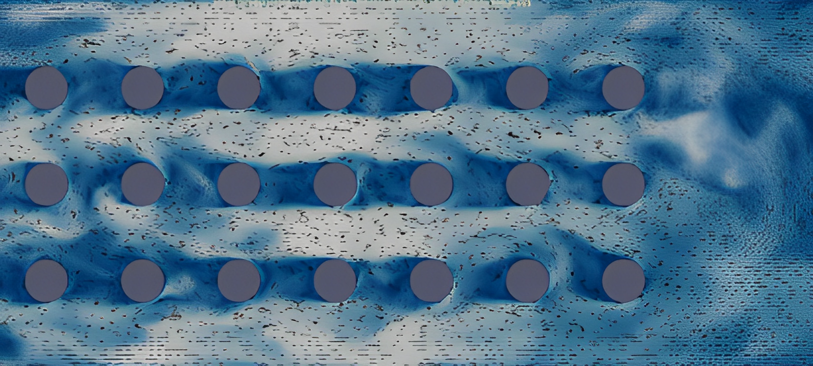
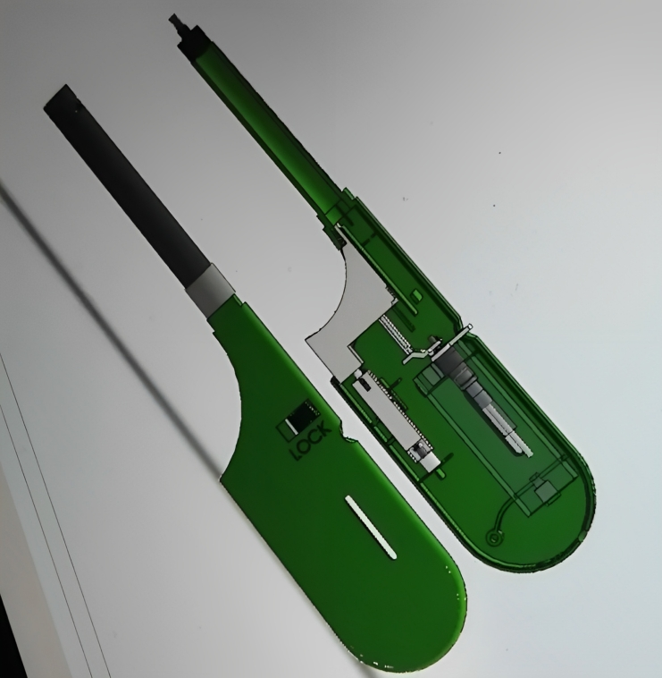
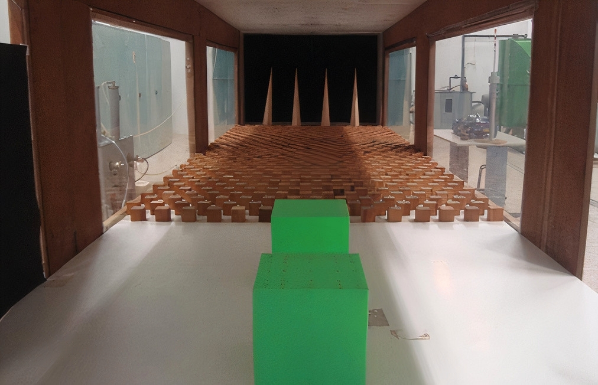
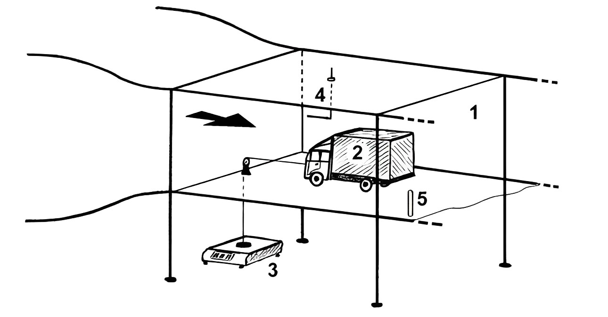

Embarking on an academic odyssey, my website unfolds a tapestry of projects meticulously crafted during my university journey—This collection represents the culmination of projects undertaken both independently and as part of a group, demonstrating my ability to excel both as a self-directed individual and as a valuable team contributor.


As part of the Computer-Aided Design (CAD) course, I chose to design a kitchen lighter using SolidWorks. The project involved leveraging the robust features and capabilities of SolidWorks to meticulously model the intricate components and details of the lighter in both 3D and 2D. This endeavor allowed me to further enhance my proficiency in SolidWorks and explore the complexities of accurately representing a functional object in a digital environment. Through this pursuit, I gained valuable hands-on experience in applying SolidWorks techniques to product design and refining my skills in CAD software.

This investigative project involved creating, developing, and characterizing the atmospheric boundary layer (ABL) and its interaction with a fixed cubic model immersed within it. The experimental work was conducted at the Fluids and Thermodynamics Department of NOVA SST, using passive elements to simulate aerodynamic roughness. This allowed for the simulation of a type 4 ground according to Davenport, replicating an open ground environment with walls, houses, and dispersed trees. Pressure coefficients were measured on a cubic model at 0 and 30 degrees, subjected to a pre-simulated speed profile. The project yielded valuable insights and acceptable results in studying the ABL's behavior and its impact on the cubic model.

In our experimental laboratory, we conducted measurements on a small-scale model of a truck in the wind tunnel of the Laboratory of Fluid Mechanics and Applied Thermodynamics. Our goal was to determine the drag coefficient of the truck. Specifically, we focused on examining the effects of two different positions for the wind deflector mounted on top of the cabin. This study allowed us to gain insights into the aerodynamic performance of the truck and provided valuable data for further analysis and optimization.

As part of the Machine Design course, students were tasked with designing a packaging line for dry cakes. The project involved developing mechanisms for cake placement, partial wrapping with thermal sealing, and sealing the sides of individual packages. Two specific parts were selected for detailed design and analysis, with accompanying technical drawings. Materials were carefully chosen for component realization, and descriptions of mechanisms and calculations for machine sizing were provided. The project showcased the students ability to apply their knowledge in designing a functional and efficient packaging solution

As part of the curricular unit of Cutting Technologies, students were tasked with developing a progressive tooling solution for the mass production of a specific component, drawing upon various catalogs and the knowledge acquired in relation to punching and bending processes.